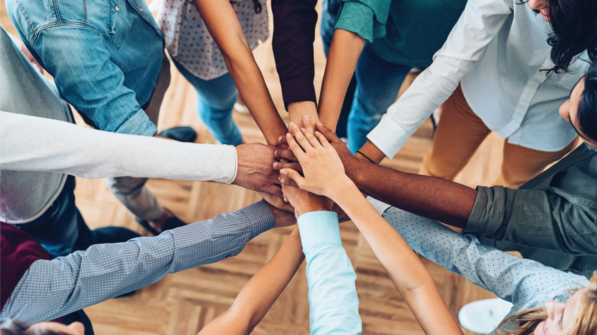
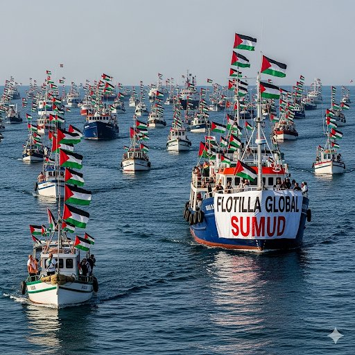

Global citizenship, to me, is the idea that every human being shares a set of rights and responsibilities that extend beyond national borders. At its core, it is the recognition that humanity is interconnected and that our well-being is tied not only to the people in our immediate community, but also to those living on the other side of the world. While some resist this fact, every person on the planet is a member of the same race: the human race. We are all equal, and we should all have access to an equitable share of the resources, opportunities, and interactions needed not just to survive, but to thrive.
Choosing Connection on Purpose
I accept and celebrate that it is my responsibility to make connections and build relationships with people from other countries and cultures. Over the past forty-plus years of my life, I have been fortunate to have opportunities to meet and interact with people outside of my small community. Each of these encounters has given me a greater understanding of the human condition. By learning how other people live, work, and experience their daily realities, I gain a deeper perspective on my own choices and interactions. These experiences have shaped who I am, reinforcing the idea that growth comes from connection.
In some ways, this is the grown-up version of what my favorite 80s cartoons tried to teach me: that the world is bigger and more colorful than whatever small corner you start in, and that you only really understand it by stepping outside yourself and meeting others where they are.
Filling in the Gaps
As I continue to work towards being a better global citizen, I recognize that I must also broaden my knowledge. Much of my education has focused primarily on the history and issues of white people of European descent, leaving large gaps in my understanding of the struggles, triumphs, and cultures of countless other peoples who inhabit millions of square miles of the globe. In the past, I did not always think to seek out these perspectives. Now, I see that such knowledge is not optional, it is both essential and urgent.
The crises we see here at home and in dozens of other countries make it clear how connected we truly are. The miles between us do not insulate us from shared experiences or common challenges. Climate change, conflict, migration, pandemics, and inequality ripple across borders, whether we acknowledge it or not.
Empathy as a Global Practice
When we take the time to understand the histories, cultures, and lived experiences of others, we strengthen our capacity for empathy. And empathy is the foundation for choosing to build each other up rather than tear each other down. That, to me, is the true spirit of global citizenship: recognizing that our actions matter beyond our immediate surroundings, and choosing to act in ways that add more care, understanding, and color to the shared world we live in.
My goal is to keep learning, keep listening, and keep connecting—so that, in my own small way, I can help make this world a little brighter for the people I share it with.